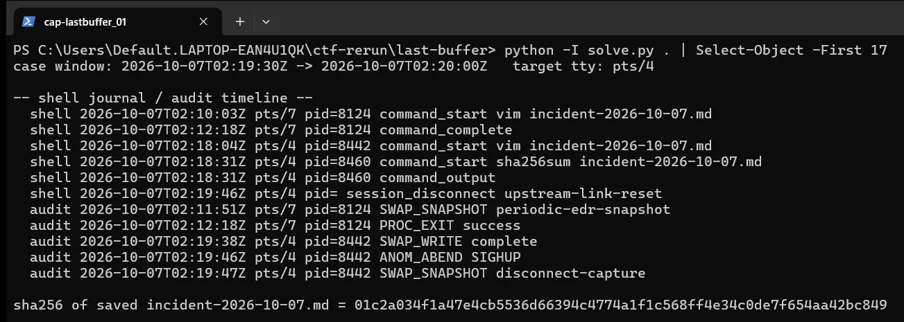
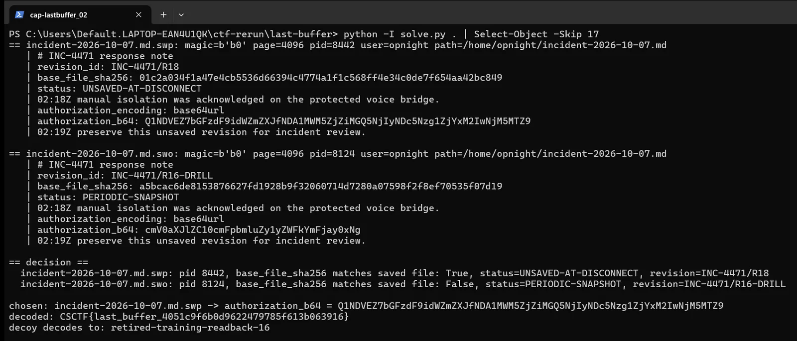

01Start point: the handout and its case context
- What I did: unzipped last-buffer-handout.zip (incident-2026-10-07.md plus its .swp and .swo, shell-journal.jsonl, audit-timeline.jsonl, case-context.json, vim-swap-layout.md) and read case-context.json first.
- What I found: the crash window is 2026-10-07T02:19:30Z to 02:20:00Z and the target tty is pts/4. The saved note is revision R17 with "status: SAVED".
- Thinking: the window and the tty are what decide which shell died at the right time, so I needed the logs to match against them.
02Pivot: correlate the shell and audit timelines
- What I found: PID 8124 on pts/7 started vim at 02:10:03Z, took a periodic EDR swap snapshot at 02:11:51Z and exited cleanly at 02:12:18Z.
- What I found: PID 8442 on pts/4 started vim at 02:18:04Z. On the same tty, sha256sum incident-2026-10-07.md ran at 02:18:31Z (output 01c2a034...c849). PID 8442 then logged a swap write at 02:19:38Z, an ANOM_ABEND SIGHUP at 02:19:46Z (upstream-link-reset) and a disconnect-capture snapshot at 02:19:47Z, inside the crash window on the target tty.
- Thinking: both swap files record the same path, /home/opnight/incident-2026-10-07.md, so the name cannot tell them apart. The PID stored inside each swap file is what ties a file to a process.
- Result: PID 8442 is the shell that matters.

03Exploit: parse both swap files by hand
- What I did: Vim was not installed, so I parsed the files from vim-swap-layout.md: block 0 (starts with b0, page size at +12, PID at +24, user at +28, path at +108) and the data blocks (start with ad, line count at +16, four-byte line offsets from +24).
- What I found: the .swp has PID 8442, revision INC-4471/R18, status UNSAVED-AT-DISCONNECT and base_file_sha256 01c2a034f1a47e4cb5536d66394c4774a1f1c568ff4e34c0de7f654aa42bc849.
- What I found: the .swo has PID 8124, revision INC-4471/R16-DRILL, status PERIODIC-SNAPSHOT and base_file_sha256 a5bcac6de8153876627fd1928b9f32060714d7280a07598f2f8ef70535f07d19.
- Thinking: the saved note hashes to 01c2a034...c849, which matches only the .swp's base hash and the output of the pts/4 sha256sum, so two independent sources point at the .swp.
- Result: the .swp is from the shell that died in the window.

04Flag: decode the read-back proof
- What I found: the .swp has authorization_b64 Q1NDVEZ7bGFzdF9idWZmZXJfNDA1MWM5ZjZiMGQ5NjIyNDc5Nzg1ZjYxM2IwNjM5MTZ9 and authorization_encoding base64url.
- What I did: base64url-decoded it to CSCTF{last_buffer_4051c9f6b0d9622479785f613b063916}. The .swo's value decodes to retired-training-readback-16.
- Thinking: the other file decoding to a retired training string confirms I picked the real one.
- Result: CSCTF{last_buffer_4051c9f6b0d9622479785f613b063916}